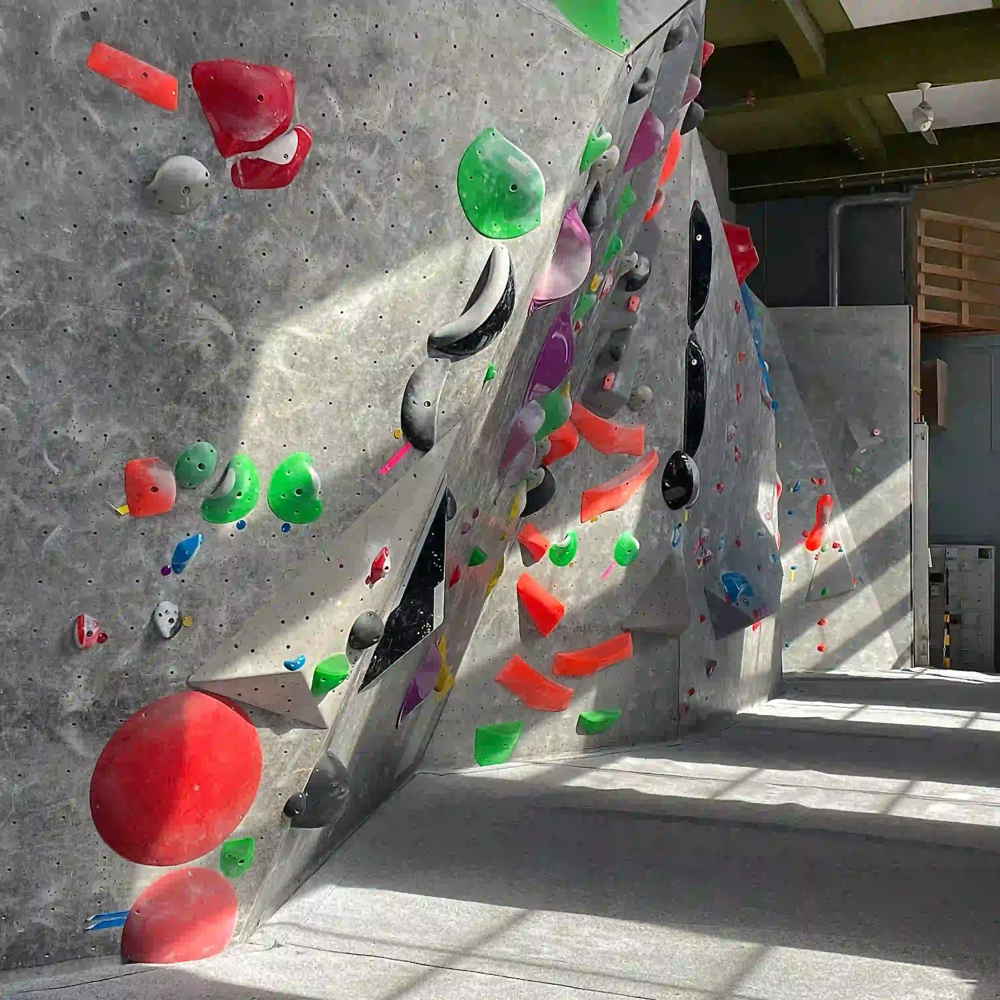
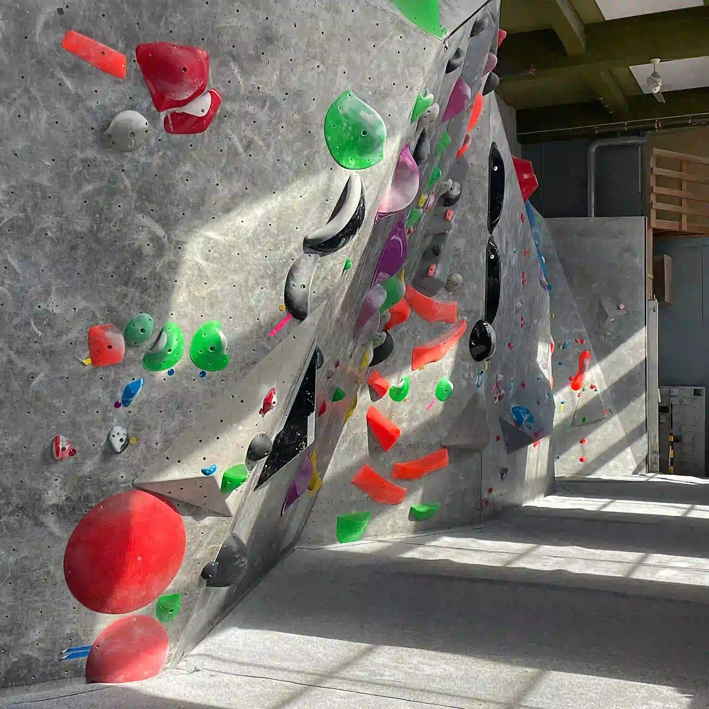

TEMA 5
Grundlæggende indhold

Om forløbet
Vores sidste forløb på første semester handlede om indholdsproduktion, som er en proces der handler om at skabe og formidle indhold - tekst og billeder. Vi blev delt i grupper og fik til opgave at lave et redesign for en selvvalgt virksomhed. Derefter skulle vi gøre brug af vores viden og redskaber fra de tidligere temaer. Vi skulle lave interview, styletiles, wireframes, prototyper og teste dem. I dette forløb fik vi blandt andet genopfrisket viden omkring filformater og billedbehandling. Vi blev også for første gang præsenteret for Lottie Files.

Gruppeprojekt
Min gruppe og jeg stødte på Nørrebros Klatreklub og besluttede os for at lave redesign af deres hjemmeside. Den var stort set kun grå, så vi havde mange muligheder i forhold til det nye design. Vi lavede hver især styletiles, fik dem testet og valgte ud fra svarene hvilken stil vi skulle fokusere på. Prototyperne blev lavet og vi fordelte kodningsarbejdet mellem os. Kodningen skulle foregå i Github, hvilket jeg fandt lidt svært og uoverskueligt i starten. Da vi individuelt var færdige med hver vores side, samlede vi det hele og begyndte på den præsentation, som skulle vise vores arbejdsproces.
Se vores redesign

 
